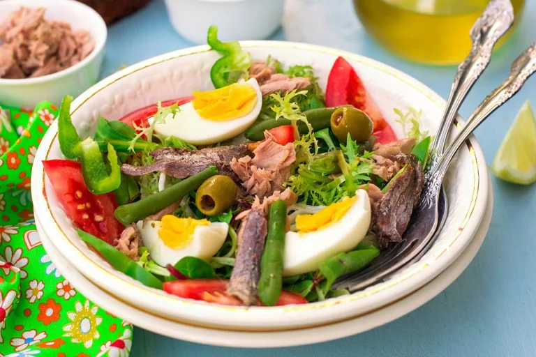

Salade Nicoise

Description
Salade NIcoise is a typical french salad from the Provence region. Often eaten as a side dish, it can also be a light meal on its own. The salad is a mix of lettuce fresh tomatoes, booiled eggs, (canned or fresh)tuna, green beans, Nicoise Cailletier olives, and anchovies.
Ingredients
- 200g new potato, thickly sliced
- 2 medium eggs
- 100g green bean, trimmed
- 1 romaine lettuce heart, leaves separated and washed
- 8 cherry tomatoes, halved
- 6 anchovies in olive oil, drained well
- 197g can tuna steak in spring water, drained
- 2 tbsp reduced-fat mayonnaise
Steps
- Bring a large pan of water to the boil. Add the potatoes and the eggs, and cook for 7 mins. Scoop the eggs out of the pan, tip in the green beans and cook for a further 4 mins. Drain the potatoes, beans and eggs in a colander under cold running water until cool. Leave to dry.
- Peel the eggs and cut into quarters. Arrange the lettuce leaves in 2 shallow bowls. Scatter over the beans, potatoes, tomatoes and egg quarters. Pat the anchovies with kitchen paper to absorb the excess oil and place on top.
- Flake the tuna into chunks and scatter over the salad. Mix the mayonnaise and 1 tbsp cold water in a bowl until smooth. Drizzle over the salad and serve.